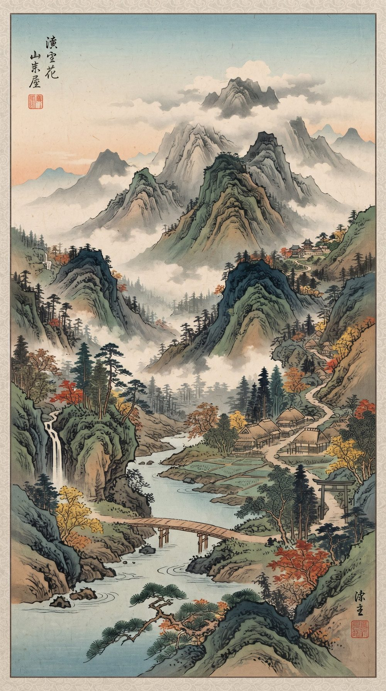

Мое_коровы
Окно 1 Горы

Счётчик
0коров
1 корова в секунду
0,0л молока
0 л в секунду
Ферма
Улучшения покупаются за молоко. Чем больше коров, тем больше молока.
Особые улучшения
Каждое покупается один раз. Цена указана в коровах или в литрах молока.
Громкость
Музыка и звуки создаются самим сайтом, без чужих авторских прав. Музыка включается после первого касания экрана.
Оформление
Ночная тема
Мое_коровы · версия 0.0.4 альфа